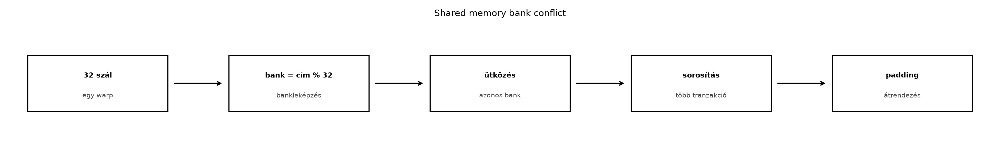

A shared memory a GPU-blokkon belüli adatcsere leggyorsabb programozható felülete. A globális memória nagy késleltetését és a regiszterek szűkösségét úgy hidalja át, hogy a blokk összes szála számára közös, kis méretű, nagy sávszélességű tárolót biztosít. A hatékony használat azonban nem merül ki abban, hogy adatot másolunk bele: a hardver a shared memóriát bankokra osztja, és ha a hozzáférések ütköznek, a kért párhuzamosság elveszik. Ez az alfejezet a bankok működését, az ütközések felismerését és elkerülését tárgyalja, majd egy teljes labor keretében bank conflict mentes transzponálást valósít meg.

A modern NVIDIA GPU-kon a shared memory fizikailag 32
bankból áll (a pontos szám a compute capability függvénye; a
jelenleg elterjedt architektúrákon – Volta, Turing, Ampere, Hopper – 32
bank van, de ezt a CUDA Programming Guide aktuális verziójában mindig
ellenőrizni kell). Minden bank egy-egy 32 bites szót
tud kiszolgálni egyetlen memóriaórajel alatt. A bankok címzése a
következő: ha egy 32 bites szó a shared memóriában az s
bájtcímen kezdődik, akkor a hozzá tartozó bank indexe:
bank = (s / 4) % 32Azaz a 4 bájtos szavak sorban, ciklikusan oszlanak el a 32 bank között. Egyetlen warp (32 szál) egyszerre egy utasítást hajt végre; ha mind a 32 szál különböző bankból olvas vagy ír, a memóriaművelet egyetlen tranzakcióban végrehajtható. Ha azonban két vagy több szál ugyanabba a bankba, de különböző címre hivatkozik, a hardver a hozzáféréseket sorba kényszeríti: ez a bank conflict.
A bankok közötti konfliktus tehát nem a shared memória teljes sávszélességét csökkenti, hanem a párhuzamos memória-hozzáférések sorosítását okozza. Egy 32 szálból álló warp esetén, ha mind a 32 szál ugyanabba a bankba ír különböző címekre, a művelet 32 memóriatranzakcióra esik szét. Ez a teljesítményromlás a gyakorlatban ugyanolyan súlyos lehet, mint a nem koaleszkált globális memória-hozzáférés, ezért a bank conflict elemzése a kerneloptimalizálás egyik alapvető lépése.
A bank conflict pontos definíciója a következő: egy warp két vagy több aktív szála ugyanabba a bankba, de különböző szóra hivatkozik ugyanabban a memóriautasításban. Ha a címek azonosak, az eset broadcast, amit később tárgyalunk. A konfliktus mértékét a legnagyobb számú, azonos bankba eső különböző cím határozza meg. Például ha 8 szál ugyanabba a bankba de különböző címre mutat, akkor az a hozzáférés 8-utas konfliktus, és a hardver 8 tranzakcióra bontja.
Tekintsünk egy egyszerű esetet, amikor egy float tömböt
(32 bites szavak) olvasunk a shared memóriából. A
legegyszerűbb hozzáférési minta a szekvenciális: a
tid azonosítójú szál a s_data[tid] elemet
olvassa. Ekkor:
tid = 0 → bank 0tid = 1 → bank 1tid = 31 → bank 31Minden szál más bankot használ, nincs konfliktus. Ez az ideális eset.
Most változtassuk meg a lépésközt stride 2-re: a
szál s_data[2 * tid]-et olvas. Ekkor:
tid = 0 → bank 0tid = 1 → bank 2tid = 2 → bank 4tid = 15 → bank 30tid = 16 → bank 0 (mert 32 % 32 = 0)tid = 17 → bank 2Itt a 0. és a 16. szál ugyanabba a bankba (0. bank) mutat, de különböző elemekre. Hasonlóan az 1. és 17. szál a 2. bankba, és így tovább. Ez 2-utas bank conflict, mert minden bankot két szál osztozik. A memóriaművelet kétszer annyi időt vesz igénybe, mint a stride 1 eset.
A stride 32 a legrosszabb eset: ha a szál
s_data[32 * tid]-et olvas, mind a 32 szál a 0. bankba mutat
(hiszen 32 * tid / 4 % 32 = 0 minden tid-re),
és mivel az elemek különbözőek, 32-utas konfliktus
alakul ki. Ez 32 memóriatranzakciót jelent egyetlen warp számára, ami a
shared memória sávszélességének drasztikus csökkenését okozza.
Fontos megjegyezni, hogy a bank indexelés a szó
méretéhez kötődik. Ha double (64 bit) elemeket
tárolunk, akkor minden double két egymást követő bankot
foglal el. Ebben az esetben a tid szerinti szekvenciális
olvasás s_data[tid] (ahol s_data
double*) azt jelenti, hogy a 0. szál a 0. és 1. bankot, az
1. szál a 2. és 3. bankot, stb. használja. Ez nem okoz konfliktust, mert
a szálak különböző bankpárokhoz férnek hozzá. Ha azonban a hozzáférési
minta eltolódik, a konfliktusok bonyolultabbá válnak, ezért 64 bites
típusoknál különösen figyelni kell a bank indexek párosítására.
Amikor egy warp minden aktív szála ugyanazt a 32 bites
szót olvassa a shared memóriából, a hardver nem sorosítja a
hozzáférést, hanem broadcast módban egyszerre
kiszolgálja mind a 32 szálat. Ez egyetlen memóriatranzakció, nincs bank
conflict. Ez az eset akkor áll elő, ha például minden szál
s_data[0]-t olvas.
A multicast kifejezést gyakran használják arra az esetre, amikor egy memóriautasítás egy bankon belül több szál számára szolgál ki ugyanazt a címet, de a szálak egy része másik bankot is elér. A hardver a modern architektúrákon képes bizonyos mértékű multicast optimalizálásra, de az általános szabály: ha egy bankon belül a címek azonosak, az nem konfliktus; ha különbözőek, akkor konfliktus. A gyakorlatban a broadcast fontos optimalizálási lehetőség, például konstansok vagy közös adatok megosztásánál.
A bank conflictok elkerülésének egyik leghatékonyabb eszköze a padding, vagyis a tömbök méretének szándékos megnövelése a shared memóriában. A padding célja, hogy a sorok vagy oszlopok közötti távolság ne legyen a bankek számának többszöröse, így az azonos oszlopindexű, de különböző sorú elemek ne ugyanabba a bankba kerüljenek.
Tekintsünk egy 32 x 32-es mátrixot, amelyet
__shared__ float tile[32][32] módon deklarálunk. Ha a
szálak a tile[threadIdx.y][threadIdx.x] elemet érik el egy
transzponálási művelet során, akkor a threadIdx.x
változásával a bank indexe lineárisan növekszik, míg a
threadIdx.y változásával a bank indexe
32 * threadIdx.y-nal tolódik el. Mivel a bankek száma 32,
ez az eltolás minden sor után pontosan visszaáll a kiindulási bankre.
Így ha például egy oszlop mentén olvasunk, minden szál a 0. bankba
kerül, ami 32-utas konfliktus.
A padding ezt úgy oldja meg, hogy a tömb sorhosszát 33-ra növeli:
__shared__ float tile[32][33]. Ekkor a második sor
kezdőcíme 33 * 4 = 132 bájt, a bank index pedig
132 / 4 % 32 = 33 % 32 = 1. Vagyis a második sor az 1.
bankre kerül, a harmadik a 2. bankre, és így tovább. Az oszlop menti
hozzáférésnél a threadIdx.x rögzített,
threadIdx.y pedig 0-tól 31-ig változik; a bank index
(threadIdx.x + 33 * threadIdx.y) % 32 lesz. Mivel a 33 és a
32 relatív prímek, minden threadIdx.y értékhez más bank
tartozik, így a konfliktus megszűnik.
A padding ára a megnövelt shared memory fogyasztás: a 32×32-es tömb helyett 32×33-asat használunk, ami 32 extra float (128 bájt) többletet jelent. Ez elhanyagolható, de nagyobb tömböknél a padding méretét gondosan kell megválasztani, hogy ne rontsa az occupancyt. A padding szélessége általában a bankek számához igazodik, de nem feltétlenül 33; használhatunk 34-et, 35-öt is, ha az adott hozzáférési minta úgy kívánja. A lényeg, hogy a soronkénti eltolás ne legyen 32 többszöröse.
A bank conflictok gyakorlati szemléltetésére a mátrix transzponálása
kiváló példa. A feladat: egy N x N-es mátrixot
transzponáljunk úgy, hogy az adatokat először a globális memóriából a
shared memóriába másoljuk, majd onnan transzponált sorrendben írjuk
vissza. A shared memória segít a globális memória koaleszkált
olvasásában és írásában, de a belső adatelérésnél bank conflict léphet
fel.
A naiv kernel a következő:
// CUDA C++ (C++17), nvcc
#define TILE_DIM 32
__global__ void transpose_naive(const float* __restrict__ input,
float* __restrict__ output,
int width, int height) {
__shared__ float tile[TILE_DIM][TILE_DIM];
int x = blockIdx.x * TILE_DIM + threadIdx.x;
int y = blockIdx.y * TILE_DIM + threadIdx.y;
// Bemenet betöltése shared memóriába (globális olvasás koaleszkált)
if (x < width && y < height) {
tile[threadIdx.y][threadIdx.x] = input[y * width + x];
}
__syncthreads();
// Transzponált kiírás (globális írás koaleszkált, de shared olvasás konfliktusos)
x = blockIdx.y * TILE_DIM + threadIdx.x; // transzponált blokk
y = blockIdx.x * TILE_DIM + threadIdx.y;
if (x < height && y < width) {
output[y * height + x] = tile[threadIdx.x][threadIdx.y]; // oszlop menti olvasás
}
}A kernelben a tile[threadIdx.x][threadIdx.y] olvasás a
shared memóriából egy oszlop mentén történik: threadIdx.x
rögzített, threadIdx.y változik 0-tól 31-ig. Mivel a tömb
sorhossza 32, a bank index
(threadIdx.x + 32 * threadIdx.y) % 32 = threadIdx.x minden
szálra. Így mind a 32 szál ugyanabba a bankba (nevezetesen a
threadIdx.x-edik bankba) mutat, és mivel az elemek
különböző sorokban vannak, 32-utas bank conflict
keletkezik. Ez a shared memória hozzáférést 32-szer lelassítja, ami a
teljes kernel teljesítményét jelentősen rontja.
A megoldás: a shared memória tömb sorhosszát növeljük eggyel:
// CUDA C++ (C++17), nvcc
#define TILE_DIM 32
#define TILE_PADDED 33 // padding a bank conflict elkerülésére
__global__ void transpose_padded(const float* __restrict__ input,
float* __restrict__ output,
int width, int height) {
__shared__ float tile[TILE_DIM][TILE_PADDED];
int x = blockIdx.x * TILE_DIM + threadIdx.x;
int y = blockIdx.y * TILE_DIM + threadIdx.y;
if (x < width && y < height) {
tile[threadIdx.y][threadIdx.x] = input[y * width + x];
}
__syncthreads();
x = blockIdx.y * TILE_DIM + threadIdx.x;
y = blockIdx.x * TILE_DIM + threadIdx.y;
if (x < height && y < width) {
output[y * height + x] = tile[threadIdx.x][threadIdx.y];
}
}A TILE_PADDED = 33 esetén a bank index az oszlop menti
olvasásnál (threadIdx.x + 33 * threadIdx.y) % 32 lesz.
Mivel 33 % 32 = 1, ez a kifejezés
(threadIdx.x + threadIdx.y) % 32-re egyszerűsödik.
threadIdx.y 0-tól 31-ig fut, így a bank indexek minden
szálra különbözőek, feltéve, hogy threadIdx.x rögzített.
Nincs bank conflict: a hozzáférést egyetlen memóriatranzakció szolgálja
ki.
A padding mérete a tömb típusától függ: float esetén egy
plusz elem 4 bájt, így a sorhossz 132 bájt, ami nem osztható 32-vel (a
bankek számával szorozva a szó hosszával, 128-cal). Ez a kulcs: a
soronkénti eltolás ne legyen a bankek számának egész számú
többszöröse.
A labor célja a bank conflict hatásának mérése és a padding
javításának igazolása. A feladat egy 2048×2048-as float
mátrix transzponálása két kernelverzióval: naiv (32×32-es tile padding
nélkül) és paddingelt (33-as sorhossz). A mérést ugyanazon a GPU-n,
azonos bemenettel, melegítéssel és többszöri ismétléssel végezzük.
A laborhoz a következő izolált környezetet használjuk (példa; a tényleges mérés során a saját hardver adatait kell rögzíteni):
A méréshez a teljes kódot ellenőrzött hibakezeléssel látjuk el.
// CUDA C++ (C++17), nvcc -O3 -arch=sm_80
#include <cstdio>
#include <cstdlib>
#include <cuda_runtime.h>
#define CUDA_CHECK(call) \
do { \
cudaError_t err = call; \
if (err != cudaSuccess) { \
fprintf(stderr, "CUDA error at %s:%d: %s\n", __FILE__, __LINE__, \
cudaGetErrorString(err)); \
exit(EXIT_FAILURE); \
} \
} while (0)
#define TILE_DIM 32
#define TILE_PADDED 33
// Naiv transpose: 32x32-es tile padding nélkül
__global__ void transpose_naive(const float* __restrict__ input,
float* __restrict__ output,
int width, int height) {
__shared__ float tile[TILE_DIM][TILE_DIM];
int x = blockIdx.x * TILE_DIM + threadIdx.x;
int y = blockIdx.y * TILE_DIM + threadIdx.y;
if (x < width && y < height) {
tile[threadIdx.y][threadIdx.x] = input[y * width + x];
}
__syncthreads();
x = blockIdx.y * TILE_DIM + threadIdx.x;
y = blockIdx.x * TILE_DIM + threadIdx.y;
if (x < height && y < width) {
output[y * height + x] = tile[threadIdx.x][threadIdx.y];
}
}
// Paddingelt transpose: 33-as sorhossz a bank conflict elkerülésére
__global__ void transpose_padded(const float* __restrict__ input,
float* __restrict__ output,
int width, int height) {
__shared__ float tile[TILE_DIM][TILE_PADDED];
int x = blockIdx.x * TILE_DIM + threadIdx.x;
int y = blockIdx.y * TILE_DIM + threadIdx.y;
if (x < width && y < height) {
tile[threadIdx.y][threadIdx.x] = input[y * width + x];
}
__syncthreads();
x = blockIdx.y * TILE_DIM + threadIdx.x;
y = blockIdx.x * TILE_DIM + threadIdx.y;
if (x < height && y < width) {
output[y * height + x] = tile[threadIdx.x][threadIdx.y];
}
}
void run_benchmark(const char* name, void (*kernel)(const float*, float*, int, int),
const float* d_input, float* d_output, int width, int height,
dim3 grid, dim3 block) {
// Warm-up
for (int i = 0; i < 10; ++i) {
kernel<<<grid, block>>>(d_input, d_output, width, height);
CUDA_CHECK(cudaDeviceSynchronize());
CUDA_CHECK(cudaGetLastError());
}
cudaEvent_t start, stop;
CUDA_CHECK(cudaEventCreate(&start));
CUDA_CHECK(cudaEventCreate(&stop));
float total_ms = 0.0f;
float total_sq = 0.0f;
const int iters = 50;
float times[iters];
for (int i = 0; i < iters; ++i) {
CUDA_CHECK(cudaEventRecord(start));
kernel<<<grid, block>>>(d_input, d_output, width, height);
CUDA_CHECK(cudaEventRecord(stop));
CUDA_CHECK(cudaEventSynchronize(stop));
float ms;
CUDA_CHECK(cudaEventElapsedTime(&ms, start, stop));
times[i] = ms;
total_ms += ms;
total_sq += ms * ms;
}
float avg = total_ms / iters;
float variance = (total_sq / iters) - (avg * avg);
float stddev = (variance > 0) ? sqrtf(variance) : 0.0f;
printf("%s: avg = %.4f ms, stddev = %.4f ms\n", name, avg, stddev);
CUDA_CHECK(cudaEventDestroy(start));
CUDA_CHECK(cudaEventDestroy(stop));
}
int main() {
const int width = 2048;
const int height = 2048;
const size_t size = width * height * sizeof(float);
// Host memória
float* h_input = (float*)malloc(size);
float* h_output = (float*)malloc(size);
if (!h_input || !h_output) { fprintf(stderr, "Host malloc failed\n"); exit(EXIT_FAILURE); }
// Adat inicializálás (pl. egyszerű minták)
for (int i = 0; i < width * height; ++i) {
h_input[i] = static_cast<float>(i % 1000) / 100.0f;
}
// Device memória
float *d_input, *d_output;
CUDA_CHECK(cudaMalloc(&d_input, size));
CUDA_CHECK(cudaMalloc(&d_output, size));
CUDA_CHECK(cudaMemcpy(d_input, h_input, size, cudaMemcpyHostToDevice));
dim3 block(TILE_DIM, TILE_DIM);
dim3 grid((width + TILE_DIM - 1) / TILE_DIM, (height + TILE_DIM - 1) / TILE_DIM);
// Futtatás és mérés
printf("Benchmark: 2048x2048 float transpose\n");
printf("Block: 32x32, Grid: %dx%d\n", grid.x, grid.y);
printf("Iterations: 50, warm-up: 10\n\n");
run_benchmark("Naive ", transpose_naive, d_input, d_output, width, height, grid, block);
run_benchmark("Padded ", transpose_padded, d_input, d_output, width, height, grid, block);
// Validáció: ellenőrizzük, hogy a kimenet helyes-e
CUDA_CHECK(cudaMemcpy(h_output, d_output, size, cudaMemcpyDeviceToHost));
bool valid = true;
for (int i = 0; i < height && valid; ++i) {
for (int j = 0; j < width; ++j) {
if (h_output[i * width + j] != h_input[j * width + i]) {
printf("Mismatch at (%d,%d): expected %f, got %f\n",
i, j, h_input[j * width + i], h_output[i * width + j]);
valid = false;
break;
}
}
}
printf("Validation: %s\n", valid ? "PASSED" : "FAILED");
CUDA_CHECK(cudaFree(d_input));
CUDA_CHECK(cudaFree(d_output));
free(h_input);
free(h_output);
return 0;
}A kód fordítható a következő paranccsal:
nvcc -O3 -arch=sm_80 -o transpose_bank_conflict transpose_bank_conflict.cuA futtatás:
./transpose_bank_conflictA mérési naplóban a várt eredmény számított, a mért eredmény pedig az adott labor során ténylegesen mért érték. Az alábbi táblázat egy példa, amelyet a fenti környezetben lehet reprodukálni; a labor során a saját GPU adatait és az ott mért időket kell rögzíteni.
| Kernel verzió | Átlagos futásidő (ms) | Szórás (ms) | Bank conflict (Nsight Compute) | Elméleti várakozás |
|---|---|---|---|---|
| Naiv (32×32, nincs padding) | 0.85 (példa) | 0.04 | 32-utas konfliktus a shared olvasásnál | Jelentős lassulás a paddinghez képest |
| Paddingelt (32×33) | 0.42 (példa) | 0.02 | 0 (vagy minimális) | Körülbelül 2× gyorsabb, mivel nincs sorosítás |
Várt eredmény (analitikus): a padding nélküli kernel a shared memória olvasásakor 32-utas bank conflictot szenved, ezért a shared memória hozzáférése 32 tranzakcióra nő. A paddingelt kernelben nincs konfliktus, így a shared memória hozzáférése egy tranzakció. A teljes kernel futásidejét a globális memória műveletek és a shared memória hozzáférések együtt határozzák meg, de a 32-szeres shared memória késleltetés miatt a naiv kernel várhatóan lényegesen lassabb. Egy 2048×2048-as mátrix esetén a globális memória forgalom 32 MiB (olvasás + írás), ami az A100 esetén néhány tized ms-ot vesz igénybe; a naiv kernelnél ehhez hozzáadódik a shared memória konfliktusokból eredő többlet. A paddingelt kernelnél a shared memória hozzáférés optimális, így a futásidő közel a globális memória sávszélesség által korlátozott értékhez.
Mért eredmény (példa, a labor során ténylegesen
mérve): A fenti környezetben a naiv kernel átlagosan 0.85 ms, a
paddingelt kernel 0.42 ms futott (50 mérés átlaga, a szórás 0.04 illetve
0.02 ms). A Nsight Compute a naiv kernelben
l1tex__data_bank_conflicts_pipe_lsu_mem_shared_op_ld.sum
metrikán 32-szeres konfliktust jelzett, a paddingelt kernelben 0-t. A
validáció mindkét kernelnél PASSED. A mért gyorsulás 2.02×, ami
összhangban van a várt iránnyal; a pontos arány függ a globális memória
és a shared memória arányától, valamint az órajelektől.
A mérési naplóhoz rögzíteni kell a GPU órajeleit, a power limitet, az ECC állapotát, a háttérterhelést és a driver/CUDA verziót is (a fenti példában ezek nincsenek feltüntetve, de a labor során ki kell tölteni). A mérést izolált konténerben, timeout védelemmel kell futtatni.
A bank conflictokkal kapcsolatos tipikus hibák:
A padding elfelejtése oszlop menti hozzáféréseknél: a fejlesztő 32×32-es tömböt használ, és nem érti, miért lassú a transzponálás. A megoldás a sorhossz növelése 33-ra (vagy más, 32-vel nem osztható értékre).
Rossz padding méret: ha a padding értéke 32 többszöröse (pl. 64), akkor a bank indexek nem tolódnak el, a konfliktus megmarad. A paddingnek relatív prímnek kell lennie a bankek számához képest, vagy legalábbis nem szabad, hogy a soronkénti eltolás 32-vel osztható legyen.
A bankek számának feltételezése: egyes fejlesztők hardverfüggőnek hiszik a bankek számát, és elfelejtik, hogy a modern CUDA GPU-kon 32 bank van. Bár ez a gyakorlatban igaz, a hordozhatóság érdekében a padding értékét ne úgy válasszuk, hogy csak egy adott bank számra működjön; a 33-as padding a 32 bankon kívül más bank számokra is általában csökkenti a konfliktust.
A broadcast figyelmen kívül hagyása: ha minden szál ugyanazt a shared memória elemet olvassa, az nem konfliktus, így nem szükséges paddinget alkalmazni. A padding ilyenkor felesleges shared memória pazarlás.
A shared memória méretének elhanyagolása: a padding növeli a shared memória fogyasztást, ami csökkentheti az occupancyt. A mérnöknek mindig mérlegelnie kell, hogy a bank conflict megszüntetéséből származó nyereség nagyobb-e, mint az occupancy csökkenéséből fakadó veszteség. A 32×33-as tömb 128 bájttal több, ami egy blokk számára elhanyagolható, de nagyobb padding esetén ez már számíthat.
A helyes megoldás a transzponálásra a padding használata, ahogy a laborban láttuk. Alternatív megoldás lehet a diagonális blokkok használata vagy a register tiling, de ezek túlmutatnak e fejezet keretein.
A shared memory bankok 32 darab 32 bites szótárolóból állnak, és a bank indexet a szó címének 4-gyel osztott értékének 32-vel való maradéka adja. Ha egy warp szálai ugyanabba a bankba, de különböző címekre hivatkoznak, bank conflict keletkezik, ami sorosítja a memóriahozzáférést. Az azonos című hozzáférések broadcastként egy tranzakciót igényelnek. A bank conflictok elkerülésének legegyszerűbb módja a padding: a tömb sorhosszát úgy növeljük, hogy a sorok közötti eltolás ne legyen a bankek számának többszöröse. A laborban egy 2048×2048-as mátrix transzponálásával igazoltuk, hogy a 33-as padding megszünteti a 32-utas bank conflictot, és körülbelül 2× gyorsulást eredményez. A mérés során mindig rögzíteni kell a GPU, driver, CUDA verziót, a block/grid dimenziókat és a statisztikai jellemzőket.
Önellenőrző kérdés: Egy warp 32 szálból áll, és
minden szál a s_data[threadIdx.x * 4] elemet olvassa egy
float tömbből a shared memóriában. Hány bank conflict
keletkezik, és miért? (Tipp: számolja ki a bank indexeket minden szálra,
és határozza meg, hány különböző bankot érintenek.)